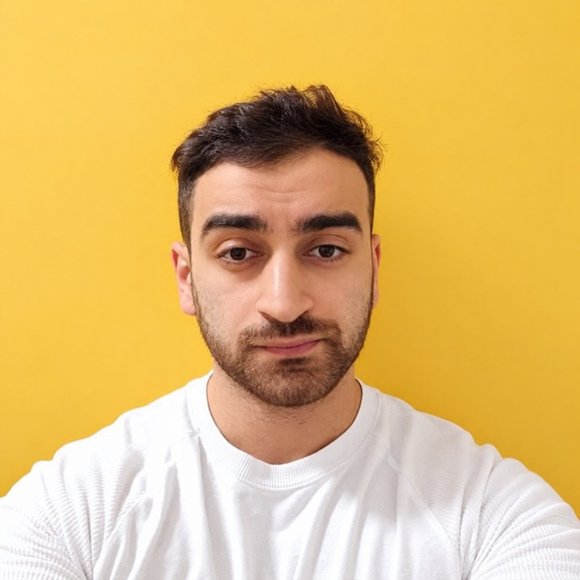
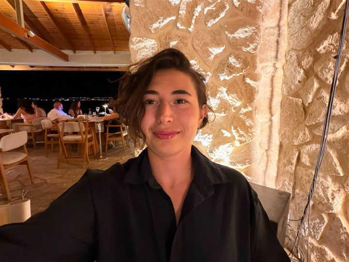

YAPAY ZEKÂ İLE DAVA ANALİZİ VE HUKUK BÜROSU YÖNETİMİ
Hukuk büronuz için
yapay zekâ desteği
CaseBridge, hukuki uyuşmazlıkları ve belgeleri yapay zekâyla analiz ederek olası dava sonuçlarını, riskleri ve hukuki seçenekleri değerlendirmenizi sağlayan bir platformdur.
BUGÜN CASEBRIDGE
Güncel pilot sonuçları
Ekip tarafından bildirilen pilot kapsamı. Bu rakamlar zaman tasarrufunu veya dava başarı oranını ölçmez.
Hukuk büroları
Dava dosyaları
CaseBridge’in içinden
Davanızı hazırlayın
Argümanınızı prova edin
Bir davayı dört hukuki bakış açısından analiz edin, argümanlarınızı yapay zekâ karşı vekille çalışın ve hukuk asistanına soru sorun
Dosya kayıtlarını ve son tamamlanmış analizdeki alternatif senaryoları dayanakları, koşullu gelişmeleri ve belirsizlikleriyle inceleyin. Kullanılabilir analiz yoksa genel hazırlık yolları açıkça belirtilir. Varsayıma bağlı Demo tahmini destek ağırlıklarını ve hesaplama yöntemini görün. Büro dosyalarındaki bağımsız 0–100 puanlar toplamlanmaz; sentetik örnekte yalnız aynı sorunun alternatifleri %100’e tamamlanır. Hukuki sonuç veya başarı garantisi değildir. Uygulamada Olasılık Ağacı’nı aç ↗

Dosyayı araştırmacı, davacı vekili, davalı vekili ve hâkim bakış açılarından inceleyin. Destekleyici argümanları, zayıf yönleri, eksik bilgileri ve önerilen sonraki adımları görün.


Tarafları, dava ayrıntılarını, yüklenen belgeleri ve tarihli gelişmeleri tek bir dava çalışma alanında tutun

Davaya bağlı görevler oluşturun, son tarih belirleyin ve tamamlanmasını takip edin. Duruşmaları ve görev tarihlerini takvimde görün.

Kaydedilen sonuçları ve büro analitiğini inceleyin. Başka bir avukatın dosyayı anlamasına yardımcı olacak bir dava devir özeti oluşturun.

Yargıtay kararlarında birlikte anılan kanun maddelerini bilgi haritasında inceleyin. Bir maddeyi seçerek bağlantılı maddeleri ve karar bağlamını görün.


Gerçek CaseBridge uygulamasından, yalnızca kurgusal örnek verilerle alınmış Türkçe ekran görüntüleri. Eğitim puanları gerçek dava sonuçlarını öngörmez.
Ürünü keşfedin: analiz, prova ve dava yönetimi
Davanıza dört bakış açısı
Argümanınız önemli
Karşı tarafınki de öyle
CaseBridge davanızı bir araştırmacının, davacı vekilinin, davalı vekilinin ve hâkimin bakış açısından inceler. Hangi iddiaların desteklendiğini, neyin eksik olduğunu ve karşı tarafın hangi noktalarda itiraz edebileceğini tek raporda görün.
01
Araştırmacı
Olguları ve eksik bilgileri belirleyin
02
Davacı vekili
İddiayı destekleyen argümanları inceleyin
03
Davalı vekili
Karşı tarafın itirazlarına hazırlanın
04
Hâkimin bakış açısı
İki tarafı birlikte değerlendirin
Dava analizi
Olası sonuçlar
Gerekçeler
Somut sonraki adımlar
Analiz raporunuz olası senaryoları ve gerekçelerini sunar. Güçlü ve zayıf yönlerin yanında, araştırılacak soruları ve davanızı güçlendirecek önerilen adımları listeler.
Ürünü iş başında görünOlası dava sonuçlarını değerlendirin
Dava materyallerinize dayanan senaryoları bir yapay zekâ değerlendirme puanı ve güven düzeyiyle birlikte inceleyin
Dava stratejinizi güçlendirin
Sonraki adımlarınızı eksik belgeler, yanıtlanmamış sorular ve önerilen işlemler etrafında planlayın
Karşı argümanlara hazırlanın
Kendi argümanlarınızın yanında karşı tarafın savunmasını ve davanızın zayıf yönlerini inceleyin
STRATEJİ NOTLARI
Örnek dava:
Alacak tahsili uyuşmazlığı
DEĞERLENDİRİLECEK ADIMLAR
1
Delil zincirini tamamlayın
Ödeme kaydını ve yazışmaları net bir zaman çizelgesinde birleştirin
2
Karşı iddiayı inceleyin
Karşı tarafın iddiasını dayandırdığı anlaşmayı ve koşulları inceleyin.
3
Yanıtlanmamış soruları netleştirin
Eksik belgeleri toplayın ve davanızı yeniden değerlendirin
Yapay zekâ çıktıları karar vermeyi destekler; hukuki bir sonucu ya da başarıyı garanti etmez. Değerlendirme puanı, istatistiksel olarak doğrulanmış bir kazanma olasılığı değildir. Sonuçlar bir hukuk profesyoneli tarafından incelenmelidir.
Platform
Duruşmadan önce
prova yapmaya zaman ayırın
Örnek bir davada taraf seçin, delil sunun ve karşı argümanlara yanıt verin. Oturumun sonunda güçlü yönlerinizi ve gelişmeye açık alanlarınızı inceleyin.

Duruşma salonuna girmeden önce prova yapın
Davacı ya da davalı vekili rolünü üstlenin. Delil sunun, yapay zekâ karşı tarafa yanıt verin ve altı aşamalı kurgusal bir duruşmada stratejinizi çalışın.

Her provadan öğrenin
Delil kullanımı, karşı argümanlar ve duruşma stratejisi üzerine geri bildirim alın. Ekrandaki puan bir eğitim değerlendirmesidir; gerçek bir davanın sonucunu öngörmez.
Ekran görüntüleri, CaseBridge uygulamasındaki kurgusal bir örnek duruşmadan alınmıştır
Dava yönetimi
Büronuzun
günlük çalışma alanı
Davalar ve belgeler
Tarafları, belgeleri ve dava geçmişini tek yerde tutun
Takvim ve görevler
Duruşma tarihlerini ve görevleri birlikte takip edin
Büro analitiği
Dava dağılımlarını ve kaydedilen sonuçları incele
Dava devri
Dava geçmişini ve sonraki adımları bir araya getirin
CaseBridge’in arkasındaki ekip
Yapay zekâ, yazılım mühendisliği ve hukuk deneyimini bir araya getirerek avukatların dava hazırlığını ve günlük çalışmalarını destekleyen bir platform geliştiriyoruz.

İzzet Ahmet
İş geliştirme ve iş ortaklıkları
Perpetual Labs bünyesindeki yapay zekâ operasyonları ve iş ortaklıkları deneyimini CaseBridge’in iş geliştirme çalışmalarına taşıyor. ASELSAN’daki mühendislik deneyimiyle teknoloji ve müşteri ihtiyaçları arasında köprü kuruyor; iş ortaklıkları ve ürünün pazara sunulması üzerine çalışıyor.
Emin Merden
Yapay zekâ ve veri
BAUROV’da yazılım ekip liderliği, Baykar’da makine öğrenmesi stajı ve Outlier AI’da dil modeli değerlendirme deneyimine sahip. Bilgisayarlı görü, veri seti hazırlama ve sentetik veri üretimi çalışmalarını CaseBridge’in yapay zekâ ve veri süreçlerine taşıyor.

Hatice Çam
Yazılım altyapısı ve sistem mimarisi
Technarts bünyesinde etkinlik yönetimi platformu ve IP adresi yönetim sistemi geliştirme çalışmalarına katkı sağlıyor. Veritabanları, veri akışları ve uygulama altyapısı üzerine çalışıyor; Perpetual Labs bünyesinde yapay zekâyla sunum hazırlama çalışmalarını da sürdürüyor.

Bengü Özbek
Ekosistem ilişkileri
Lastfall, Autosense ve Technarts deneyimleriyle müşteri ihtiyaçlarının anlaşılması ve teknoloji ekosistemindeki ilişkilerin geliştirilmesi üzerine çalışıyor. CaseBridge’in ürün ihtiyaçları ile ekosistem bağlantılarının bir araya gelmesine katkı sağlıyor.

Ahmet Büyükdağ
Hukuki içerik ve ürün danışmanlığı
İHH’daki gönüllü yönetimi ve proje koordinasyonu, Genç İHH yönetim kurulu ve Hacettepe Ombudsmanlık ve İnsan Hakları Topluluğu kurucu başkanlığı deneyimleriyle hukuki senaryolar, analiz çerçevesi ve hukukçuların ihtiyaçları üzerine çalışıyor.
Sık sorulan sorular
Sık sorulan sorular
Aklınıza
takılabilecekler
CaseBridge dava sonuçlarını kesin olarak tahmin eder mi?
Hayır. CaseBridge, dosyanızdaki bilgilere dayanarak olası senaryolar ve bir yapay zekâ değerlendirmesi sunar. Puan, istatistiksel olarak doğrulanmış bir kazanma yüzdesi değildir. Eksik bilgiler ve model hataları değerlendirmeyi etkileyebilir; nihai karar her zaman bir hukuk profesyonelindedir.
Bir davayı güçlendirmeye nasıl yardımcı olabilir?
Güçlü ve zayıf argümanları, olası itirazları ve eksik bilgileri öne çıkarır. Araştırılacak sorular ve önerilen adımlar hazırlığı somut işe dönüştürmeye yardımcı olur.
Dava analizi ile duruşma simülasyonu arasındaki fark nedir?
Dava analizi, davanıza dayanan çok perspektifli bir değerlendirme raporudur. Duruşma simülasyonu ise vekil rolünü üstlendiğiniz ve yapay zekâ karşı taraf ve hâkimle etkileşime girdiğiniz kurgusal bir eğitim çalışmasıdır.
CaseBridge kimler için tasarlandı?
Dava dosyalarını yönetmek, farklı argümanları değerlendirmek ve duruşma hazırlığını geliştirmek isteyen avukatlar ve hukuk büroları için tasarlanmıştır.
Yapay zekâ araçlarına nereden ulaşırım?
Uygulamanın üst bölümündeki CaseBridge AI menüsü; dava analizi, duruşma, hukuk asistanı ve harita araçlarını bir araya getirir. Menü mobilde de üst bölümden açılır. Erişimler hesabınızın rolüne bağlıdır.
Bilgi Haritası neyi gösterir?
Yargıtay kararlarında birlikte anılan kanun maddelerini ve aralarındaki atıf bağlantılarını gösterir. Madde arayıp seçerek ilişkileri ve karar bağlamını inceleyebilirsiniz. Bu harita dosyanıza özgü bir sonuç tahmini değildir; gösterilen oranlar kazanma olasılığı sayılmaz.
Olasılık Ağacı yüzde hesaplar mı?
Olasılık Ağacı, varsayıma bağlı sayıları “Demo tahmini” olarak gösterir. Sentetik örnekte yalnız aynı sorunun birbirini dışlayan alternatifleri toplam %100’dür; gerekli kayıt eksikse eşit başlangıç kullanılır. Büro dosyalarında örtüşebilen dallar bağımsız 0–100 destek ağırlığı alır ve toplamlanmaz. Başlangıç 50/100 nötrdür; varsayımın ve bağlı kayıt sayısının etkisi görünür. Bu sayılar kazanma olasılığı veya kalibre edilmiş hukuki tahmin değildir.
Dosyaya yeni bilgi eklendiğinde ağaç nasıl güncellenir?
Kaynakları yenile düğmesiyle dosyanın güncel kayıtlarını yeniden okuyabilirsiniz. İçerik değişmişse bir uyarı, değişen dallar ve aynı oturumdaki önceki görüntü gösterilir. Bu görünüm kendi başına yeni bir yapay zekâ analizi başlatmaz.
Karşı taraf analizi nasıl kullanılır?
Karşı Taraf Analizi aracında dosyayı ve davacı ya da davalı bakış açısını seçersiniz. Araç, verilen özete göre incelenebilecek açıkları ve karşı argümanları sunar. Çıktı, karşı tarafın gerçek niyetini veya mahkemenin kararını bildiği anlamına gelmez.
Yönetilen duruşma ile ne çalışabilirim?
Yönetilen Duruşma aracında seçtiğiniz dosyanın özeti üzerinden aşamalı bir prova yapabilirsiniz. Duruşma kaydı, soru ve yanıtlar hazırlığınızı gözden geçirmenize yardımcı olur; gerçek duruşmanın yerine geçmez.
Örnek moddaki yanıtlar gerçek bir model değerlendirmesi mi?
Örnek mod, uygulamayı denemek için önceden tanımlanmış kurgusal yanıtlar kullanır. Örnek veya eğitim etiketi taşıyan çıktılar gerçek dosyanız için yapılmış bir değerlendirme veya doğrulanmış hukuki araştırma sayılmaz.
Yapay zekâ çıktısını kullanmadan önce neyi kontrol etmeliyim?
Belge asıllarını, tarihleri, tarafların iddialarını ve varsa mevzuat ya da karar atıflarını bağımsız kaynaklarla doğrulayın. Eksik veya çelişkili bilgileri dosyaya ekleyin. Analizler ve prova puanları karar desteğidir; hukuki değerlendirme ve son karar hukuk profesyoneline aittir.